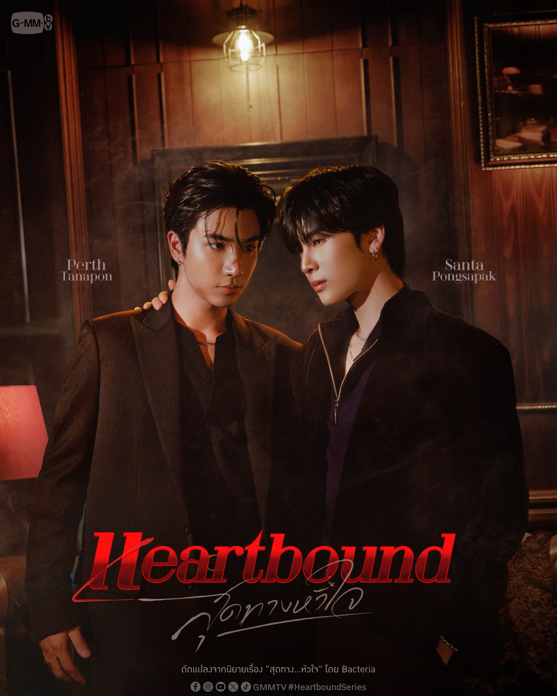

HEARTBOUND
Pilot Trailer Streaming Campaign

Streaming Goals
Help Heartbound reach the next milestone on every streaming platform.
YouTube Goals
YouTube views updated automatically
TikTok Goals
YouTube Streaming Guide
Fan streaming tips for supporting the Heartbound pilot trailer on YouTube.
Search “Heartbound สุดทางหัวใจ” on the official GMMTV YouTube channel.
Updated Aug 24, 2026These are fan-community streaming recommendations and are not official YouTube guidelines.
Public View
Open official video
Press Play
Video begins = public view
Have more time? Keep watching to support engagement too.
Engaged View
Open official video
Press Play
Keep watching naturally
Like / Comment / Share if you want
Busy? Use a Playlist
Busy studying, working, sleeping, or doing something else? Use one of our PerthSanta streaming playlists so you can keep supporting while you can’t actively choose videos yourself.
Our playlists mix the Heartbound pilot with other PerthSanta content for easier passive streaming.
Want to leave a genuine comment? Try the Comment Helper →
Streaming tips on this page are community recommendations used by fans and should not be interpreted as official YouTube view-counting rules.
Comment Helper
Not sure what to write? Generate a genuine comment idea for the Heartbound pilot trailer, then edit it and make it yours before posting.
Official Heartbound Accounts
Every platform where you can help support Heartbound.
Today's Support Mission
A few quick steps you can complete right now.
Quick Links
Jump straight to the official posts and content.
Make it yours — feel free to edit the suggestion before posting.